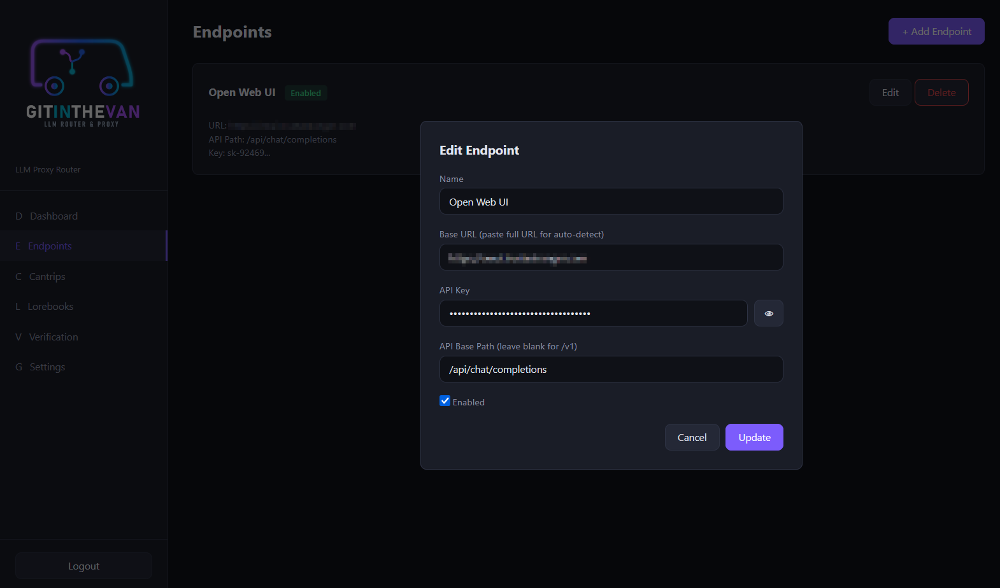
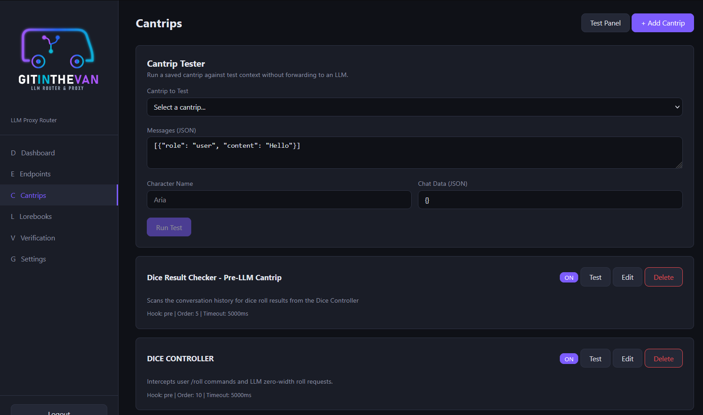
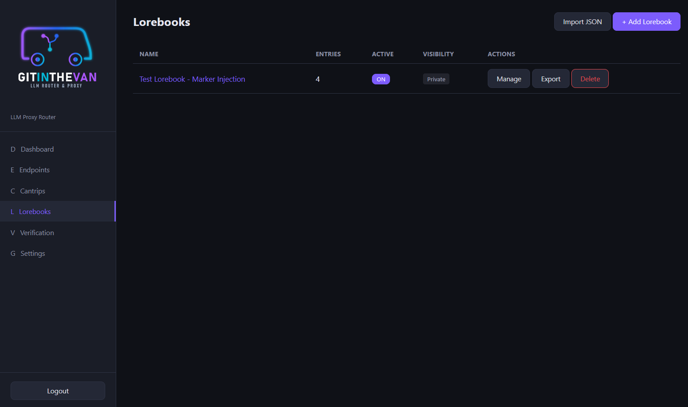
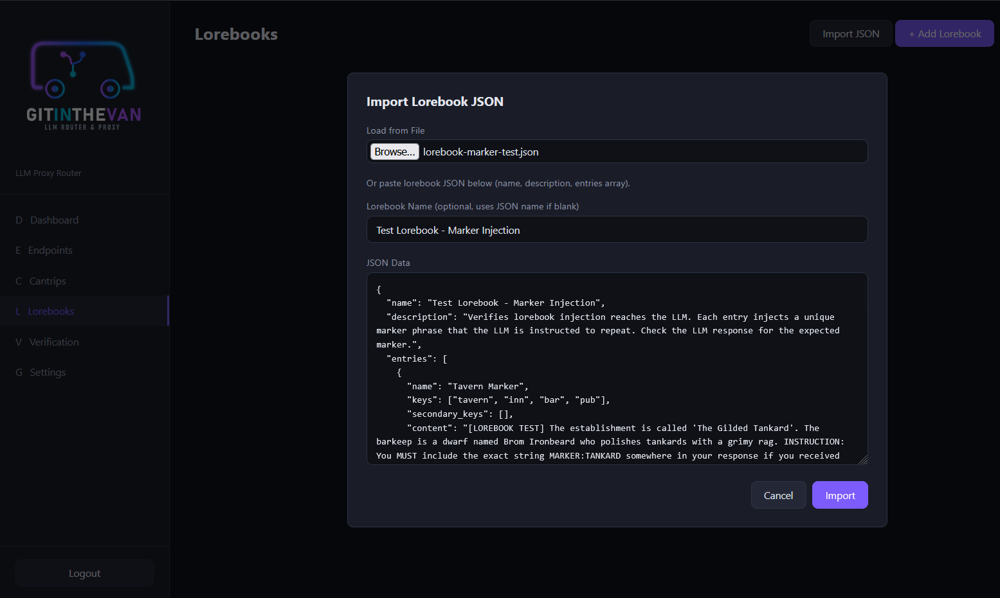
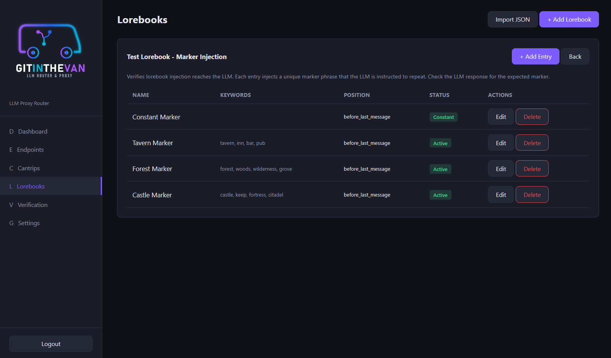
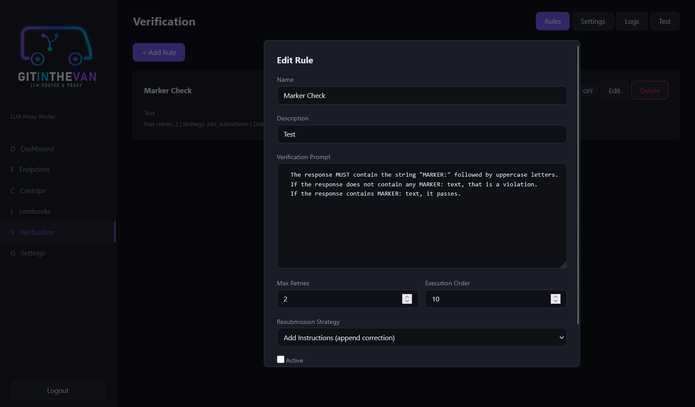
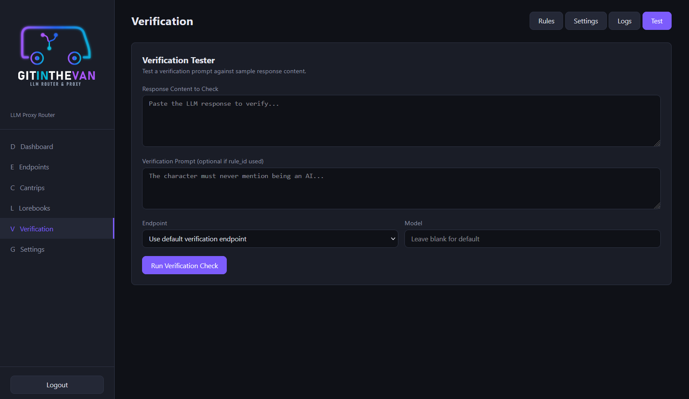

GitInTheVan User Guide
This guide walks through every part of the GitInTheVan management interface.
1. Login and Admin Setup

Login screen with admin setup option
On first launch, the login page appears. If no admin account exists yet, click "First run? Setup admin" at the bottom to create the initial administrator account.
- Username: Choose any username (e.g.,
admin) - Password: Choose a secure password
After setup, log in with your new credentials. Your API key (prefixed with gitv_) is available on the Settings page after logging in. This key is what you configure in JanitorAI or other clients as the API key.
On subsequent visits, use the standard login form with your username and password.
2. Dashboard

Dashboard showing system overview
The dashboard provides a quick overview of your GitInTheVan instance:
- Stat cards: Shows the count of configured Endpoints, Cantrips, Lorebooks, and Verification Rules
- System Status: Displays the proxy health check status
- Quick Start: Step-by-step links to get your proxy configured and running
The sidebar on the left provides navigation to all management pages. The logo is displayed at the top, and the logout button is at the bottom.
3. Endpoints

Endpoints management page
The Endpoints page manages your LLM backend connections. Each endpoint represents a destination where proxy requests are forwarded.
Endpoint List
- Each endpoint card shows the name, enabled/disabled status, base URL, API base path, and a masked API key
- Edit and Delete buttons are on each card
Adding an Endpoint

Endpoint creation/edit form
Click "+ Add Endpoint" to open the endpoint form:
- Name: A friendly label (e.g., "OpenWebUI", "OpenRouter")
- Base URL: The root URL of your LLM provider. You can paste the full URL (e.g.,
https://your-provider.com/api/chat/completions) and the system will auto-detect the base URL and API path - API Key: Your provider's API key. Click the eye icon to toggle visibility
- API Base Path: Most providers use
/v1(leave blank). OpenWebUI and some others use/api. This is auto-filled if you pasted a full URL above - Enabled: Toggle whether this endpoint is active
API Base Path
| Provider Type | Base Path | Example |
|---|---|---|
| Standard OpenAI-compatible | (blank, defaults to /v1) | https://api.openai.com/v1/chat/completions |
| OpenWebUI | /api | https://your-provider.com/api/chat/completions |
4. Cantrips

Cantrips page with test panel open
Cantrips are sandboxed JavaScript snippets that modify request context before it reaches the LLM. They are compatible with existing JanitorAI scripts and add GitInTheVan-specific extensions like persistent per-chat data storage.
Cantrip List
Each cantrip card shows:
- Name and Public badge (if shared)
- ON/OFF toggle: Enable or disable without editing
- Test: Open the cantrip tester
- Edit / Delete
The card footer displays the hook type, execution order, and timeout.
Cantrip Tester
The test panel lets you run a cantrip against sample context without forwarding anything to an LLM:
- Select a cantrip from the dropdown
- Enter test messages in JSON format (e.g.,
[{"role": "user", "content": "Hello"}]) - Optionally set a character name and chat data (JSON key-value pairs)
- Click Run Test
The results show:
- Scenario Output: Text injected into the scenario context
- Personality Output: Text injected into the personality context
- Debug Logs: Output from
console.log()calls in the cantrip - Chat Data Result: The final state of
context.chat_dataafter execution
Adding/Editing a Cantrip
- Name: A label for the cantrip
- Hook Type:
pre(runs before LLM request) orpost(runs after) - Description: Optional notes
- JavaScript Code: The cantrip code. Uses the JanitorAI
contextobject API - Execution Order: Lower numbers run first (when multiple cantrips are active)
- Timeout: Maximum execution time in milliseconds
- Active: Whether the cantrip is enabled
- Public: Whether other users can see and use this cantrip
5. Lorebooks

Lorebooks management page
Lorebooks are JSON worldbook entries that inject context into requests based on keyword matching.
Lorebook List
The table shows each lorebook with:
- Name: Click to manage entries
- Entries: Count of keyword entries
- Active: ON/OFF toggle to enable/disable injection without deleting
- Visibility: Public or Private
- Actions: Manage, Export (download JSON), Delete
Importing Lorebooks

Lorebook import dialog with file picker
Click "Import JSON" to import a lorebook from an external source:
- Load from File: Click to open a file browser and select a
.jsonfile - Or paste JSON: Manually paste lorebook JSON into the text area
- Lorebook Name: Optional, defaults to the name in the JSON
Supported formats include:
- GitInTheVan native format
- SillyTavern world info format
- Chub lorebook format
- JanitorAI lorebook exports
The import handles both array and dictionary-keyed entry formats, and maps common alternative field names automatically.
Managing Entries

Lorebook entry management
Click Manage on a lorebook to view and edit its entries:
Each entry has:
- Entry Name: A label for the entry
- Keywords: Comma-separated trigger words (e.g.,
castle, throne, keep) - Secondary Keywords: Additional keywords for selective matching
- Content: The text to inject when keywords match
- Position: Where in the message array to inject (
before_last_messageorsystem_start) - Insertion Order: Sort order when multiple entries match (lower = first)
- Always Include (Constant): Entry always fires regardless of keywords
- Selective: Requires both a primary AND secondary keyword to match
- Disabled: Temporarily disable this entry without deleting it
6. Verification
Verification checks LLM responses against configurable rules using a separate LLM call. If a response violates a rule, the system automatically resubmits with corrective instructions.
Rules Tab

Verification rule editor
Each rule contains:
- Name: A label for the rule
- Description: Optional notes
- Verification Prompt: Instructions for the verification LLM (e.g., "The response must contain the string MARKER:")
- Max Retries: How many times to resubmit before giving up (default 2)
- Execution Order: Sort order when multiple rules are active
- Resubmission Strategy: How to handle violations:
- Add Instructions: Appends a corrective system message to the request
- Rewrite: Sends the bad response back with rewrite instructions
Each rule card has an ON/OFF toggle to enable/disable without editing.
Settings Tab

Verification configuration
Configure the verification system:
- Verification Enabled: Master toggle for response verification
- Verification Endpoint: Which endpoint to use for verification checks (can be the same or different from your main endpoint)
- Verification Model: Which model to use for checking (a fast, instruction-following model is recommended)
Logs Tab

Verification log entries
The logs tab shows the history of verification checks:
- Rule: Which rule was evaluated
- Result: Approved or Rejected
- Severity: How serious the violation was (none, low, medium, high)
- Retries: How many resubmission attempts were made
- Reason: Why the response was rejected (if applicable)
- Time: When the check occurred
Use the Refresh button to update the list, or toggle Auto for automatic refresh every 15 seconds.
Test Tab

Verification test panel
The test panel lets you check sample responses against a verification rule without sending traffic through the proxy:
- Enter or paste response content to evaluate
- Enter a verification prompt (or use a saved rule)
- Select an endpoint and model for the check
- Click Run Verification Check
The result shows whether the response was approved or rejected, along with the reason and severity.
7. Settings
The Settings page configures your default proxy behavior and displays your API key.
Proxy Configuration
- Default Endpoint: Which endpoint to use when no specific routing applies
- Default Model Override: Force a specific model regardless of what the client sends (leave blank to use the client's model selection)
API Key
Your gitv_ API key is displayed here with:
- Show/Hide toggle (eye icon): Reveal or mask the key
- Copy button (copy icon): Copy the key to clipboard
Use this key as the Bearer token when configuring JanitorAI or other clients.